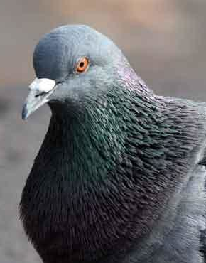
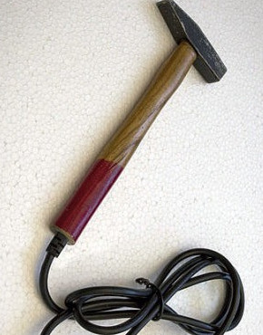
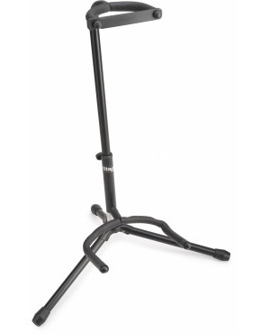
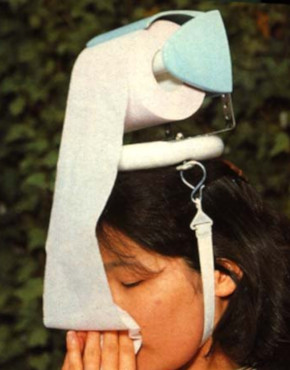
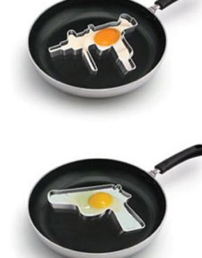
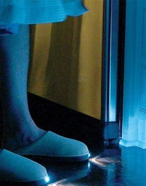
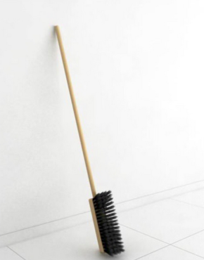

Séquoia plutôt grand
Vente flash sequoia géant
Date de non livraison : entre 500 et 550 ans
Magnifique lot de graine de sequoia en vente. Pour la modique somme de 1euros vous aurez la possibilité de ne pas vous faire livrer cet arbre majestueux qui de toute façon ne pousserait pas dans votre jardin.
Pour seulement 50 000 euros de plus vous pourrez acquérir une parcelle bucolique juste à côté de votre achat; Orienté Nord-Nord-Ouest afin de vous protéger des vents pacifiques nous vous promettons un cadre de vie conviviale et silencieux aux côtés de ce majestueux cupressinées.
50

pigeon des villes (deuxième patte vendue séparement)
Pigeon des villes
Livraison : demain
Labialisé grand kebab du coin de la rue, nos pigeons élevés à la viande de mouton et la frite tiède sauront vous charmer avec leurs pelages aux variations de couleurs chromatiques et nuancés. Hydraté à même le bitume, les oligo-excréments présent dans nos minis lacs synthétiques de trottoir donneront à votre majestueuse bête ailée une plume souple et résistante.
Pour quelques euros de plus vous pourrez bénéficier d’une prothèse afin que votre familier puisse se déplacer sur ces deux jambes et vous distinguer auprès de vos voisins.
20

marteau electrique
Marteaux électrique
livraison : livraison gratuite sous 28 heures sous réserve de livreur
« Ceci est une révolution » s’exclamait il y a peu le célèbre Thomas Rosoire. Les graines d’un avenir meilleur était dès lors planté. Directement confectionné dans nos usines délocalisés on ne sait pas où, ce marteau électrique vous permettra en toute ingéniosité une économie d’effort maximale !
Offert séparément, mais conjointement quand même, un magnifique être humain d’on ne sait toujours pas d’où et formé par nos meilleurs ingénieurs activerons le moteur de votre nouvelle outils avec leurs forces de travail. Une révolution !
120

air guitare
Air guitare (édition limité)
livraison : instantané
Reproduction originale de l’instrument phare du groupe TNIS (TheNoseIsSilence), voici en édition limité la air guitare de Her Von Tappinger. Signé et dédicacé par l’artiste lui même comme l’atteste l’image on retrouve également au dos cette petite perle musicale le célèbre dicton du groupe « Das ist keine Gitarre »
Disponible bien entendu en différents colories selon la nomenclature Ford.
Corde vendu séparrement.
120

Clémentines (vendu avec l'arbre)
Les clémentines de Maitre Mickael
livraison : jours bissextil seulement
Clémentinier de père en rododinderon, la famille Baguet à su mettre à profit un climat rigoureux et d’abondantes pluies pour faire fructifier leurs capitaux. Leur célèbre devise « Clémentine is the new black » a permis à la famille de se hisser parmi les plus influentes du globe.
Aujourd’hui à la tête d’un monopole fruitier et nectariphère sans précédent, les clémentines Baguet sont connus et reconnus pour apporter équilibre et vitamines à leurs consommateurs réguliers.
50
Oxygène (grand destockage)
Oxygène en destockage
livraison : Avant 2040 (derniers lots disponibles)
Envie de prendre l‘air ? Depuis la nouvelle législation européenne sur les biens immatériels c‘est enfin possible ! Sur place ou à emporter nos techniciens vont récupérer à 1800 mètre d‘altitude les meilleurs atomes d‘oxygènes disponibles sur la marché. Certifié qualité skymium la livraison se fait par colis spécialement emballé sous vide. Pour 1m3 d‘oxygène acheté chez nous profitez d‘une réduction à couper le souffle chez nos partenaires « Lamas-nus.com» !
20
Casque à émission de coolitude
Casque à émission de coolitude
livraison : Oui
Voici la dernière commercialisation de la firme californienne Domotricks, ce petit bijoux technologique vous permettra à l‘aide de ces capteurs sensori-moteurs de simultanément réceptionner les ondes de confiance de ses interlocuteurs et d‘émettre sur la même fréquence un mélange d’extraits naturelles d’hormones de bonobos élevés en cuve et de vos propres hormones. Les propriétés actives pénètrent en profondeur le cortex limbique des protagonistes et vont stimuler les gènes ataviques B-48 et HL-97, donnant l’impression aux autres que vous êtes cool.
(Attention, chez certaines personnes quelques effets secondaires comme une envie irrépréhensible de de bananes peuvent apparaître, veuillez lire la notice d’utilisation pour de plus amples détails.)
120

Distributeur de papier toilette portatif et amovible
Distributeur de papier toilette portatif et amovible
Livraison : Le matin à partir de 14 heures
Pour tout ceux qui ont trop souvent la tête dans le cul
120

Moule à oeuf
L'Armelette
livraison : jour de ponte
Les autorités ont rescencés une réduction du taux de criminalité de 40 %, notre envoyé spéciale à pu interviewer une bande de criminel fraîchement repentie, leurs propos sont éloquents : «Depuis l’achat de l’armelette c’est vrai qu’avec la bande on s’est senti un peu mi-molette à l’idée de continuer nos petit larcins alors on a eu l’idée de lancer notre jeu concour « Eggzilla.» où nous récompensons les œufs les plus gros reçus chaque mois et les revendons pour rémunérer les producteurs.
50

Chausson torche
Chaussons torche
Mise au point dans les laboratoires de la LPDDR (la Ligue des Petits Doigts de Pieds Résistants)
Sans les chaussons :« AIE », « BORDEL DE ZUT », « MERDE », « PU!@£#! », « AAAAAAAH », « PAS ENCORE », « COMMODE DE BRIN »
Avec les chaussons :« .. »
20

Balai horizontal à balayage rotatif
Gamme de balais conçu par Jean-Claude Van Damme après une retraite de 7 jours au monastère de Chanzhung. La légende dit qu’il aurait communié avec le dragon à 5 tête du lac sacré, les moines résidents ont privilégié une version plus sobre où JVCD serait resté coincé une semaine dans cave à cailler le lait de chèvre, le lactose concentré l’ayant laissé en état d’ébriété assez avancé pour que la porte de la pièce souterraine se transforme en énigme de plusieurs jours. Le lien avec ce balais n’a à ce jour pas encore été prouvé.
120
Crème de soin multifonction
Résultat d’une collaboration entre les laboratoires Garnier et Feu Vert, la crème d’hydratation « Visqueuse Douceur » , issue de l’agriculture biologique les escargots concassés offre un très bon lubrifiant pour les rouages de votre moteur et les imperfections de votre peau.
120